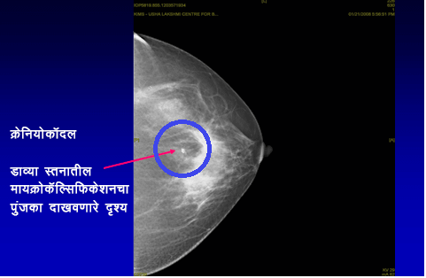
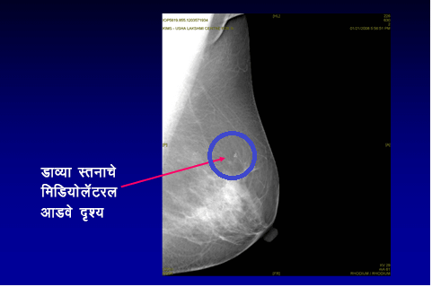

मॅमोग्राम काय आहे?
ज्यांना स्तनामध्ये गाठ/अलीकडेच काही बदल जाणवले आहेत त्यांच्यासाठी मॅमोग्राम (स्तनाचा एक्स रे) केला जातो. तज्ञांद्वारे स्तनाची चिकित्सिय तपासणी, मॅमोग्राम आणि स्तनाचे अल्ट्रासाऊंड केल्यास स्तनातील समस्या दूर करण्यास/ शोधण्यास मदत होते.
डॉक्टर..मला गाठ जाणवत नाही. मी मॅमोग्राम का करावा?
स्क्रीनिंग मॅमोग्राम म्हणजे काय?
हातानी चाचपून समजणार नाही अशा स्थितीमध्ये स्तनाच्या कर्करोगाचे निदान करण्यासाठी मॅमोग्राम (स्तनाचा एक्स रे) केला जातो, म्हणजेच (जेव्हा त्या स्त्रीला किंवा डॉक्टरांनाही स्तनामध्ये गाठ जाणवत नसते) वयाच्या 40 नंतर दरवर्षी एकदा स्क्रीनिंग मॅमोग्राम करून घेण्याचा सल्ला दिला जातो.
स्तनाच्या कर्करोग निदान अनेक वर्षे आधी त्याचे निदान होण्यासाठी मॅमोग्राफीद्वारे स्तनाचे स्क्रीनिंग (स्तनांचा एक्स रे) हा एक सिध्द झालेला मार्ग आहे. स्तनाच्या कर्करोगाचे लवकर निदान होण्यामुळे उपचार यशस्वी होण्याची सर्वात उत्तम संधी असते, ज्यामुळे जीव वाचण्याची शक्यता वाढते.




स्तनाच्या कर्करोगाचे स्क्रीनिंग सर्व वयोगटांत प्रभावी असते का?
सर्वच वयाच्या स्त्रियांनी ‘‘स्तन जागरूक‘‘ असणे महत्वाचे असले तरी, स्तनाचे स्क्रीनिंग केवळ 40 वर्षे वयाच्या पुढील स्त्रियांसाठी प्रभावी असते. 40 खालील आणि लक्षणे नसलेल्या स्त्रियांच्या स्तनांचे नियमीत स्क्रीनिंग करणे प्रभावी असल्याचे अजून सिध्द झालेले नाही.
मॅमोग्राम करून घेणे सुरक्षित आहे का? त्यामुळे रेडिएशनचा धोका निर्माण होतो का?
मॅमोग्राम करून घेणे नक्कीच सुरक्षित आहे. मॅमोग्राफीमध्ये रेडिएशनची अगदी कमी मात्रा समाविष्ट असते - यापासून आरोग्याला धोका अगदी क्षुल्लक आहे. मॅमोग्राफी दरम्यान दिली जाणारी रेडिएशनची मात्रा ही दातांचा एक्स रे काढताना मिळणार्या मात्रेइतकी असते..
मॅमोग्राफी वेदनादायक आहे का?
मॅमोग्राफीमुळे क्षणिक अस्वस्थता जरी जाणवत असली तरी, योग्यप्रकारे प्रशिक्षित रेडिओग्राफरद्वारे केली गेल्यास ती वेदनादायक नसावी. डिजिटल मॅमोग्राफीमध्ये तर ही अस्वस्थता आणखी कमी असते
पारंपारिक मॅमोग्राम आणि डिजिटल मॅमोग्राममध्ये काय फरक आहे?
फुल फिल्ड डिजिटल मॅमोग्राफी ही क्रांतीकारी प्रगती आहे ज्यामध्ये साधारण पाच सेकंदांमध्ये स्तनाची प्रतिमा घेता येते (पारंपारिक मॅमोग्राममध्ये लागणार्या चार ते पाच मिनिटांच्या तुलनेत). हे नवीन तंत्र प्रमाणित मॅमोग्राफीहून अधिक प्रभावी आहे ज्यामुळे स्तनाच्या कर्करोगात घडणारे प्रारंभिक सूक्ष्म बदल दिसून येतात आणि दाट स्तन असलेल्या अधिक तरूण स्त्रियांमध्ये हे खास करून उपयुक्त असते. इतर फायदे म्हणजे कमी अस्वस्थता आणि पारंपारिक मॅमोग्रामच्या तुलनेत रेडिएशनला नगण्य उघड होणे आणि वर ठळक केल्यानुसार अधिक अचूकता.
एवढेच नाही तर, टेलिमेडिसिन सुविधांच्या उपलब्धतेमुळे, सेकंड ओपिनियन घेण्यासाठी डिजिटल प्रतिमा जगात कुठेही पाठवता येतात. हे मशीन खूपच महाग असल्यामुळे फुल फिल्ड डिजिटल मॅमोग्राफी अजून भारतात मोठ्या प्रमाणावर उपलब्ध नाही.
स्तनाच्या कर्करोगाचे निदान करण्यात मॅमोग्राफी 100 अचूक आहे का?
स्तनाच्या कर्करोगाचे निदान करण्यासाठी मॅमोग्राम हा सर्वात सक्षम मार्ग आहे. इतर स्क्रीनिंग चाचण्यांप्रमाणेच, ते सुध्दा अचूक नाहीत. मॅमोग्राफीची अचूकता साधारण 85% आहे. याची कारणेः
स्तनाच्या एमआरआयची काय भूमिका आहे?
स्तनाच्या नियमीत स्क्रीनिंगसाठी किंवा स्तनाचा कर्करोग असलेल्या प्रत्येक रुग्णाच्या मूल्यमापनामध्ये स्तनाच्या एमआरआयची शिफारस केली जात नाही.
तथापि, ठराविक परिस्थितींमध्ये हे अत्यंत उपयुक्त असू शकते: